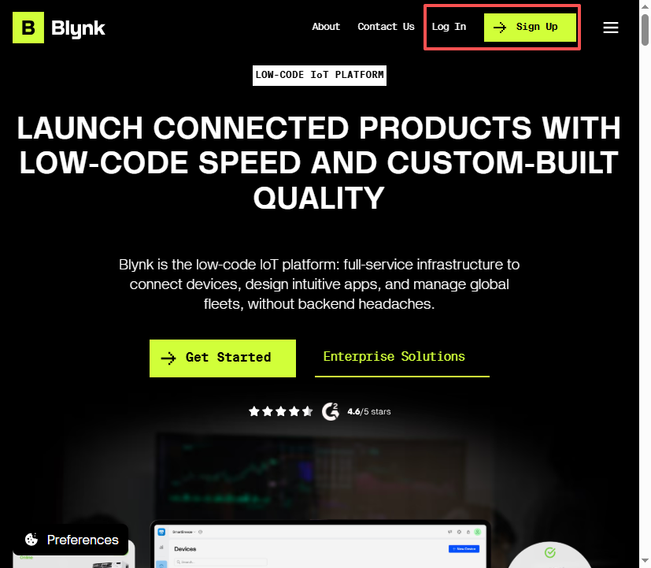
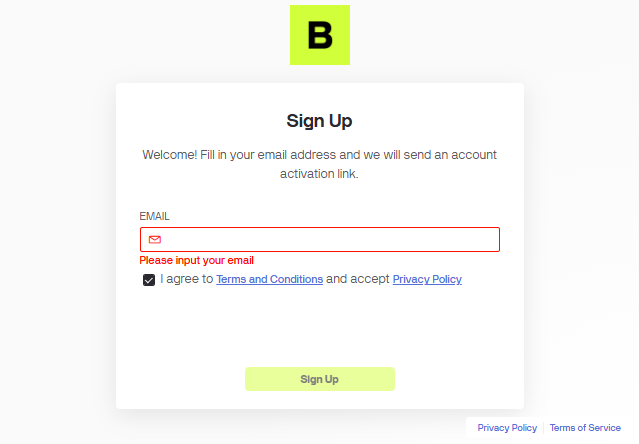
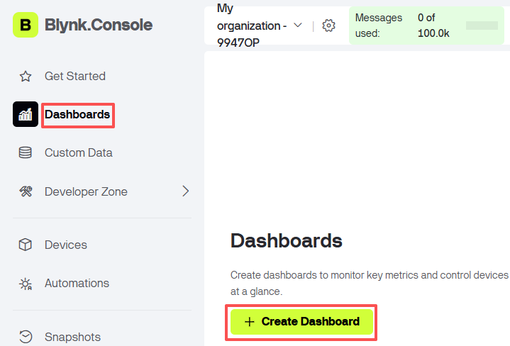
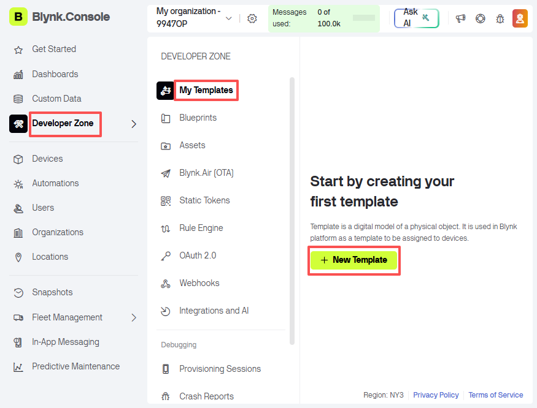
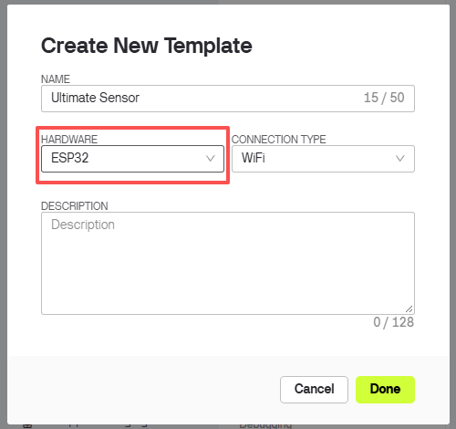
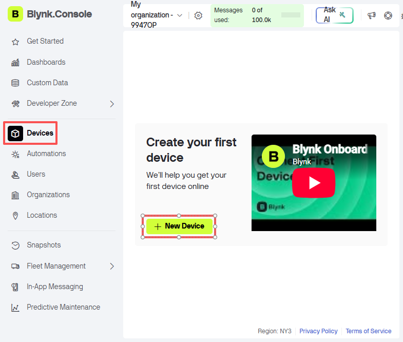
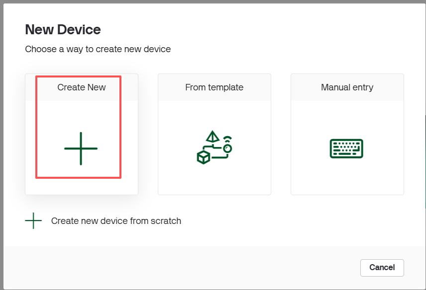
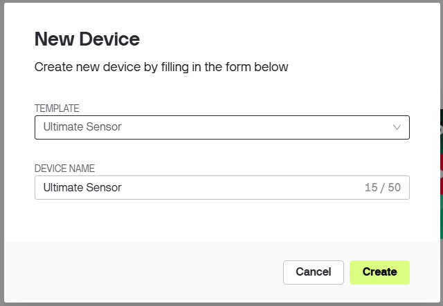
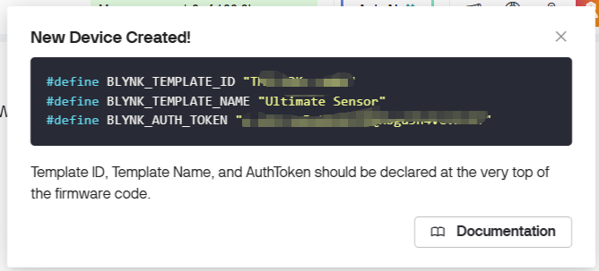
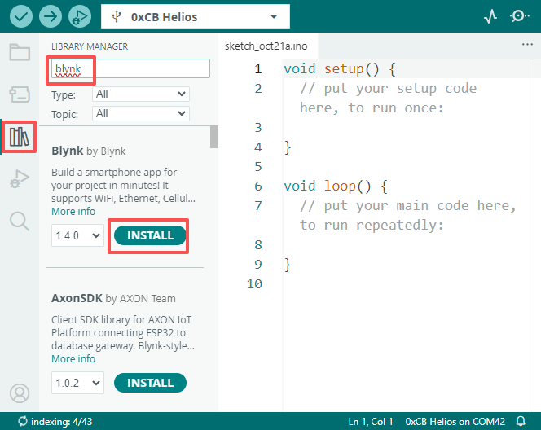

Note
Hello, welcome to the SunFounder Raspberry Pi & Arduino & ESP32 Enthusiasts Community on Facebook! Dive deeper into Raspberry Pi, Arduino, and ESP32 with fellow enthusiasts.
Why Join?
Expert Support: Solve post-sale issues and technical challenges with help from our community and team.
Learn & Share: Exchange tips and tutorials to enhance your skills.
Exclusive Previews: Enjoy exclusive access to new product announcements and sneak peeks.
Special Discounts: Enjoy discounts on our newest products.
Festive Promotions and Giveaways: Take part in giveaways and holiday promotions.
👉 Ready to explore and create with us? Click [here] and join today!
1.1 Configuring the Blynk
In this chapter we create a Blynk account, a template and a device, and then copy the three lines that go at the top of every project sketch.
Note
The Blynk.Console interface is updated from time to time. The screenshots below were taken in 2026. If a button has moved, look for the field name (such as AUTH TOKEN) instead of the exact button position.
1. Create an account
Go to BLYNK and click Sign Up in the upper right corner.

Enter your email address, tick the agreement box and click Sign Up.

Open the activation link in your mailbox, then create a password.


2. Enable Developer Mode
Blynk has to know that you are the person building the device and not the end user. Only a user in Developer Mode can create templates, dashboards and devices, which is everything this kit needs.
Click My Profile in the upper right corner of the Blynk.Console.
Make sure the Developer Mode switch is set to ON.
The first account of an organization is a developer by default, but on some accounts the switch has to be turned on by hand.
Note
If the sidebar has no Developer Zone and no + New Template button, the Developer Mode switch is still off. Turn it on and the menu items appear - no need to sign out or create another account.
Tip
Developer Mode is a setting of your account, not a paid feature. The free plan already allows it. What the free plan limits is the number of devices and the number of messages per day, so for a classroom it is usually enough to create one template and reuse it for every board.
3. Create a template
After signing in you will see the Blynk.Console. Open Developer Zone in the left sidebar, then My Templates, and click + New Template.


Fill in the template form:
NAME: Ultimate Sensor
HARDWARE: ESP32
CONNECTION TYPE: WiFi

Note
HARDWARE is only a label that Blynk uses to suggest example code. Both ESP32 and ESP8266 work with the projects in this kit; the screenshot above uses ESP32.
Click Done when finished.


4. Create a device
A template on its own has no auth token - a device has. Every device you create gets its own token.
In the left sidebar click Devices, then + New Device.

Choose Create New.

Select the template you just created, give the device a name, and click Create.

A New Device Created! window pops up with the three lines you need.

Note
If you close that window, the same information is always available in Devices -> your device -> Developer Tools.


5. Put them at the top of the sketch
#define BLYNK_TEMPLATE_ID "TMPL..."
#define BLYNK_TEMPLATE_NAME "Ultimate Sensor"
#define BLYNK_AUTH_TOKEN "..."
Warning
Copy them exactly. A single wrong character and the board will never connect.
6. Install the Blynk library
In the Arduino IDE open Library Manager, search for blynk and install Blynk 1.4.0.


Important
The sketches in this kit use BlynkSimpleShieldEsp8266, which needs a second library called BlynkESP8266 (it provides ESP8266_Lib.h). It is not in Library Manager and has to be installed manually:
Click Code -> Download ZIP
In the Arduino IDE choose Sketch -> Include Library -> Add .ZIP Library
Restart the IDE
See 1.2 Adding the required libraries for more details.